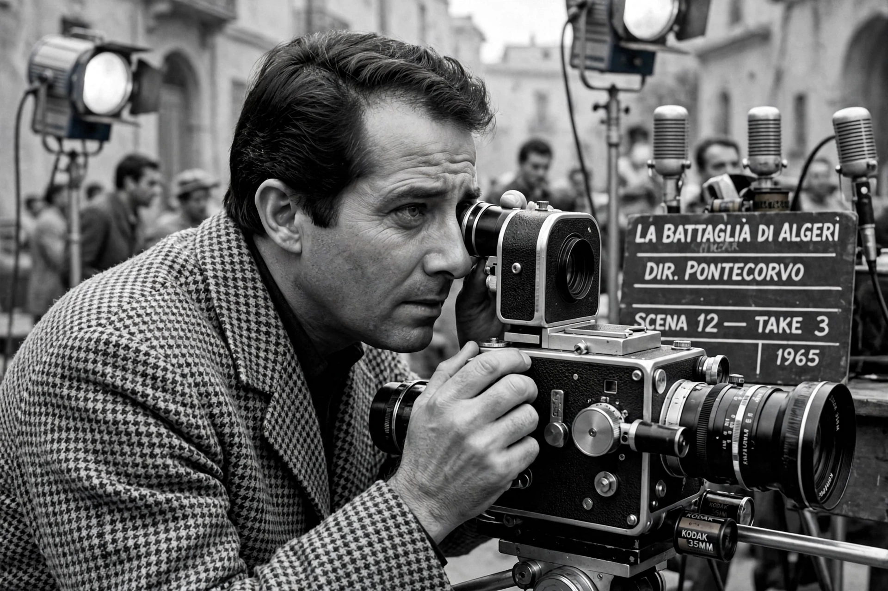

Gillo Pontecorvo (19 November 1919 – 12 October 2006) was an Italian film director and screenwriter. He is best known for The Battle of Algiers (1966), a landmark of political cinema depicting the Algerian War of Independence, and for Burn! (1969) starring Marlon Brando.

| Gillo Pontecorvo | |
|---|---|
| Born | 19 November 1919, Pisa, Italy |
| Died | 12 October 2006 (aged 86), Rome, Italy |
| Occupation | Film director, screenwriter |
| Notable work | The Battle of Algiers, Burn!, Kapò |
Pontecorvo was born in Pisa into a wealthy Jewish family; his brother Bruno Pontecorvo became a noted physicist. Under Italy's racial laws he fled to France, worked as a journalist, and joined the Italian Resistance and the Communist Party during the Second World War. After the war he became a documentary filmmaker and assistant to directors such as Yves Allégret, and drew inspiration from Italian neorealism.
His feature Kapò (1960), about a Jewish girl in a concentration camp, was nominated for the Academy Award for Best Foreign Language Film. The Battle of Algiers (1966), shot in grainy black-and-white newsreel style with a largely non-professional cast including FLN veteran Saadi Yacef as a version of himself, reconstructs the 1956–57 urban guerrilla campaign against French forces commanded by officers in the mould of Marcel Bigeard. The film won the Golden Lion at Venice, was banned in France for several years, and has been studied both by insurgent groups and by military academies, including a Pentagon screening in 2003. It tells the story of the movement led by figures such as Ahmed Ben Bella.
Pontecorvo directed Burn! (1969) with Marlon Brando and Ogro (1979), about the assassination of Franco's prime minister Carrero Blanco. He directed the Venice Film Festival from 1992 to 1996 and later made documentaries and the film Another World Is Possible (2001) about the Genoa G8 protests. He died in Rome in 2006.
Article recreated from memory for the muse-webcrawl project.